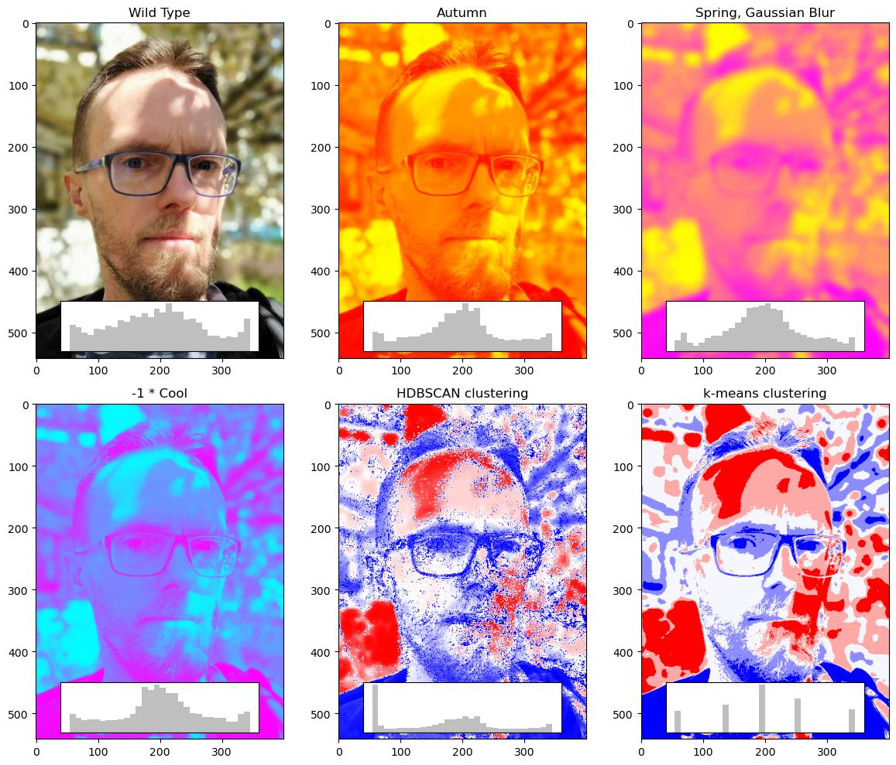

Filip Stefaniak
eng., PhD, hab.
🄌 Hello! 👋
Senior Scientist at IIMCB in Warsaw, with PhD in Organic Chemisty and seven years of experience in Pharma Industry R&D (MedChem and Computer Aided Drug Design). Currently working on data-driven computational methods for RNA-small molecule ligands.
- Computing since 1988 (Timex)
- Programming since 1989 (BASIC and logo 🐢)
- Chemistry since 1990 (water electrolysis)
- In the internet since 1994 (EARN and Bitnet, gopher and telnet)
- Linux since kernel 2.0.39 (freesco)
- Machine learning since 2010 (Decision Trees and KNIME 2.3.0)


ⶠScience 🧬
See also: Scientific publications
ⓐ RNA-ligand interactions
- Binding mode prediction with new scoring function AnnapuRNA. Combination of statistical data extracted from X-ray structures and Machine Learning.
- RNA-ligand Interaction detection and classification with fingeRNAt.
- Structural Interaction Fingerprints and Machine Learning for predicting and explaining binding of small molecule ligands to RNA.
ⓑ Protein-ligand interactions & proteins
- Tox21 challenge - Prediction of Compounds Activity Using ML and Low-Dimensional Molecular Descriptors
- Predict Protein Stability Index (PSI) from the sequence with ML regression
- Tox24 challenge - Prediction of Compounds Activity Using ML and Low-Dimensional Molecular Descriptors (2)
❷ After-hours science ⚗
- Indoor cat localization using Bluetooth beacons and Machine Learning :cat:.
- autowx2 - a set of programs and scripts for schedule satellite and ground recordings with SDR dongle. Bundled plugins include scripts for processing weather APT images from NOAA or METEOR satellites, ISS voice communication recordings, and more :satellite: .
- Statistics of mass-running events (from 5K to marathons)
⸠Tools ğŸ›
- Console monitor for mqtt stream, with colors and filters
- telegraf2rrd - pass data from telegraf to RRD database.
➍ Running and Triathlon - Personal Bests
- 21:22 / 5 km (2022 ParkRun Warszawa)
- 46:29 / 10 km (2024 Budapest NATO Futás)
- 01:39:24 / Half Marathon (21.097 km) (2023 Półmaraton Warszawski)
- 03:56:44 / Marathon (42.195 km) (2024 Genève Marathon)
- 06:01:48 / Ultra 50 (53 km, 2024, Bison Ultra Trail - ITRA: 2 pts, Indeks UMTB: 50K)
- 09:05:32 / Ultra 72 (72 km, 2025 Bison Ultra Trail - ITRA: 3 pts, Indeks UMTB: 50K)
- 01:27:59 / 1/8 IM (2019 Triathlon Częstochowa)
- 02:48:03 / 1/4 IM (2021 Triathlon Nieporęt)
- 05:43:39 / 1/2 IM (2022 Triathlon Bydgoszcz)
- 02:52:19 / Olympic Triathlon (2022 Serock Triathlon)
Other
- Prime number finding: 1041951957975*2^1290000-1 and 7255*2^887988+1 (using BOINC and PrimeGrid)
- Registered HAM operator: SP5FLS (listening at 145.500 MHz, Warsaw area)